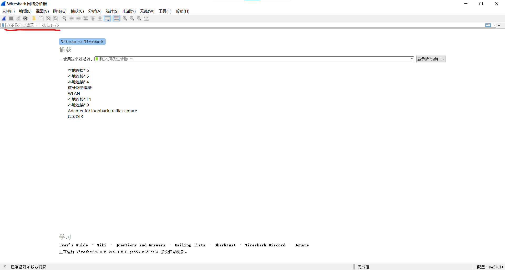
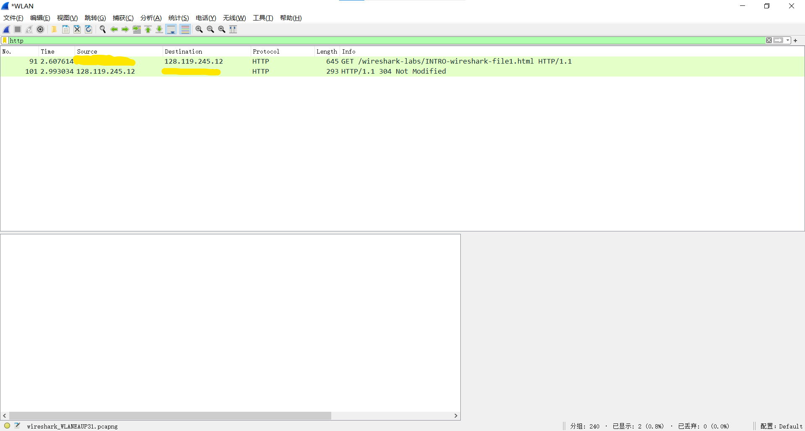
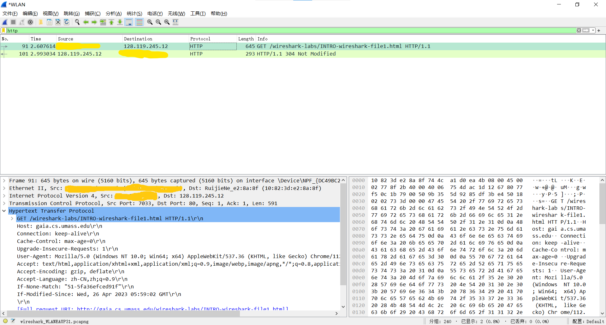

Wireshark_lab 1
Last updated on 6 months ago
Wireshark_lab 1
准备
实验指导书下载地址：WIRESHARK LABS
文档翻译可以考虑用：DeepL
Wireshark 下载：WIRESHARK
过程
要求：本实验只需要了解相关网络协议的运行即可
下载 Wireshark 之后，进入主界面：

在 应用显示过滤器 部分，可以对接收到的分组进行过滤
下面显示的均为电脑的不同端口
在上方的下拉窗口中，捕获 -> 选项
中可以设置不同捕获端口，在此我们对 WLAN 窗口进行捕获
开始捕获后，在浏览器输入：http://gaia.cs.umass.edu/wireshark-labs/INTRO-wireshark-file1.html
返回 Wireshark ，在 应用显示过滤器 部分输入
http，此时便显示：

可以看到，此时进行了一来一回两次操作，目标 IP 为
128.119.245.12
第一次客户端（我们）向服务端（对方）发出 GET
请求，第二次服务端（对方）向客户端（我们）返回 304
信息，两次的时间间隔在 \(0.4\)
秒左右
也就是说，HTTP GET 请求报文的发送到 HTTP OK
回复报文的接收需要大约 \(0.4\)
秒左右
下面的两个窗口则是显示一些具体的信息，左边为数据包的详细信息，右边为数据包内容的十六进制和
ASCII 显示

Wireshark_lab 1
https://nishikichisato.github.io/2023/04/26/Wireshark_lab/Wireshark_lab 1/